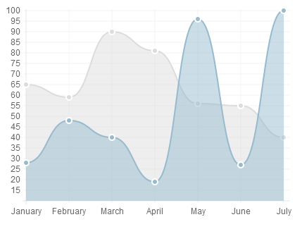
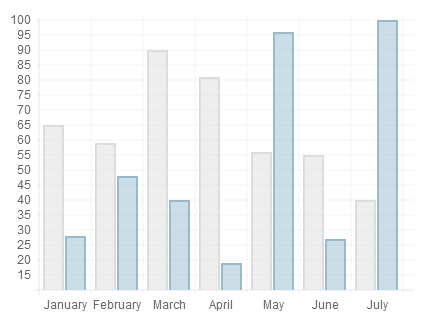
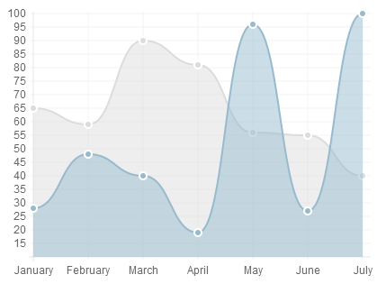
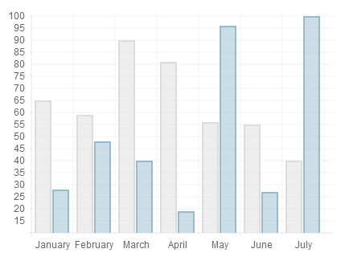
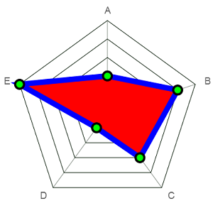
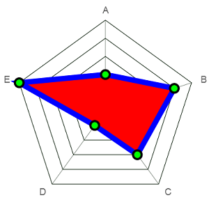
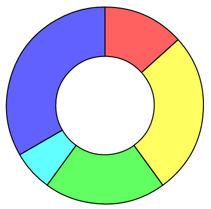
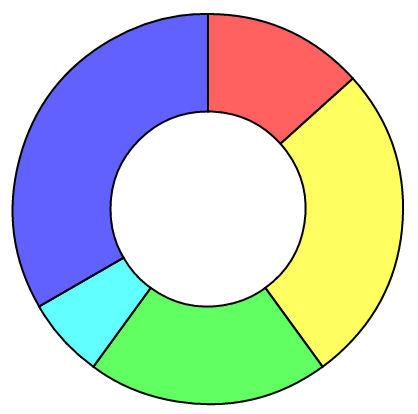
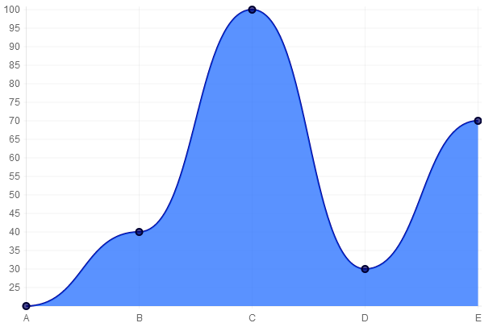

Chart.jsとは - 描画可能なグラフの種類
 折れ線グラフ
 棒グラフ
 折れ線グラフ
 棒グラフ
// 折れ線グラフ・レーダーチャート
var data = {
datasets:[
{
// X軸とグラフ間の色
fillColor:"red",
// 線の色
strokeColor: "blue",
// グラフ上の点の色
PointColor: "green",
// 点の縁色
pointStrokeColor: "black",
// 表示する値
data:[20, 40, 30, 10, 50]
}
],
// X軸上のラベル
labels:["A", "B", "C", "D", "E"]
};
 

// パイチャート・ドーナツチャート・鶏頭図
var data = [
// 表示する値、塗りつぶしの色
{ value: 20, color: "rgba(255, 30, 30, 0.7)" },
{ value: 40, color: "rgba(255, 255, 30, 0.7)" },
{ value: 30, color: "rgba(30, 255, 30, 0.7)" },
{ value: 10, color: "rgba(30, 255, 255, 0.7)" },
{ value: 50, color: "rgba(30, 30, 255, 0.7)" }
];
 






/
#